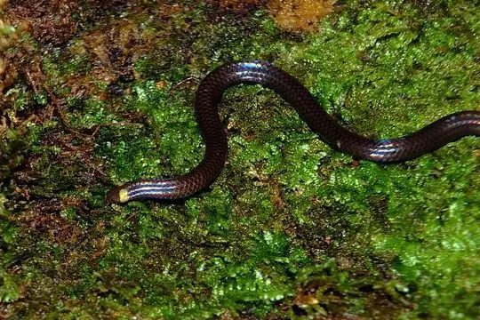
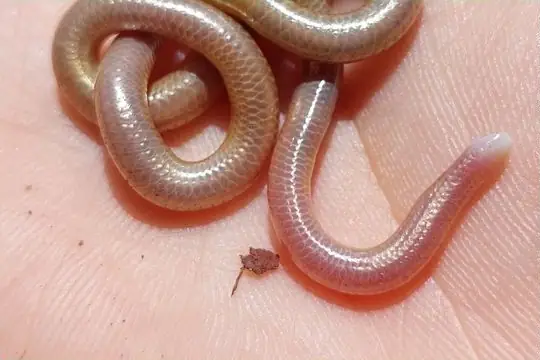
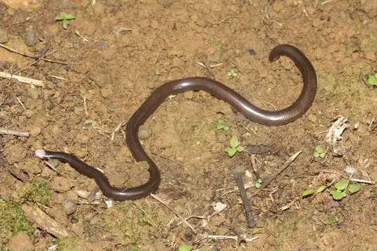

Snakes of Suriname
87 snake species are recorded in Suriname in SnakeList: 16 venomous and 71 non-venomous, from 8 families.
- 87species
- 16venomous
- 71non-venomous
- 8families
These totals count the snakes SnakeList records as living in Suriname. A species counts if it is recorded anywhere in the country, so not every snake lives in every region.
Species
Showing 87 species
 Aesculapian False Coral SnakeErythrolamprus aesculapii
Aesculapian False Coral SnakeErythrolamprus aesculapii Amazon Coastal House SnakeThamnodynastes pallidus
Amazon Coastal House SnakeThamnodynastes pallidus Amazon False Fer-de-lanceXenodon severus
Amazon False Fer-de-lanceXenodon severus Amazon Puffing SnakeSpilotes sulphureus
Amazon Puffing SnakeSpilotes sulphureus Amazon Tree BoaCorallus hortulana
Amazon Tree BoaCorallus hortulana Aquatic Coral SnakeMicrurus surinamensis
Aquatic Coral SnakeMicrurus surinamensis Banded Cat-eyed Snake (annulata)Leptodeira annulata
Banded Cat-eyed Snake (annulata)Leptodeira annulata Big-scaled Blind SnakeTrilepida macrolepis
Big-scaled Blind SnakeTrilepida macrolepis Boa ConstrictorBoa constrictor
Boa ConstrictorBoa constrictor Boie's Ground SnakeAtractus badius
Boie's Ground SnakeAtractus badius Broadhead Ground SnakeAtractus latifrons
Broadhead Ground SnakeAtractus latifrons Brongersma's Worm SnakeAmerotyphlops brongersmianus
Brongersma's Worm SnakeAmerotyphlops brongersmianus Brown Rainbow BoaEpicrates maurus
Brown Rainbow BoaEpicrates maurus Brown SipoChironius fuscus
Brown SipoChironius fuscus Brown VinesnakeOxybelis aeneus
Brown VinesnakeOxybelis aeneus BushmasterLachesis muta
BushmasterLachesis muta Carib Coral SnakeMicrurus psyches
Carib Coral SnakeMicrurus psyches Cascabel RattlesnakeCrotalus durissus
Cascabel RattlesnakeCrotalus durissus Catesby's Snail-eaterDipsas catesbyi
Catesby's Snail-eaterDipsas catesbyi Central Sipo (quadricarinatus)Chironius quadricarinatus
Central Sipo (quadricarinatus)Chironius quadricarinatus Coal SnakePseudoboa neuwiedii
Coal SnakePseudoboa neuwiedii
Collared Blind SnakeHabrophallos collaris Common Green RacerChlorosoma viridissimum
Common Green RacerChlorosoma viridissimum Cope's Snail-eaterDipsas copei
Cope's Snail-eaterDipsas copei Coral Cylinder SnakesAnilius scytale
Coral Cylinder SnakesAnilius scytale Crowned False BoaPseudoboa coronata
Crowned False BoaPseudoboa coronata Dainty Blind SnakeTrilepida dimidiata
Dainty Blind SnakeTrilepida dimidiata Diurnal Vine SnakeXenoxybelis argenteus
Diurnal Vine SnakeXenoxybelis argenteus Emerald Tree BoaCorallus caninus
Emerald Tree BoaCorallus caninus False Water CobraHydrodynastes gigas
False Water CobraHydrodynastes gigas Fer-de-LanceBothrops atrox
Fer-de-LanceBothrops atrox- No photo yetFilippi's Ground SnakeAtractus favae
 Flaming Ground SnakeAtractus flammigerus
Flaming Ground SnakeAtractus flammigerus Green AnacondaEunectes murinus
Green AnacondaEunectes murinus Green JararacaBothrops bilineatus
Green JararacaBothrops bilineatus Guyana Blackback Coral SnakeMicrurus collaris
Guyana Blackback Coral SnakeMicrurus collaris Guyana Blind SnakeEpictia tenella
Guyana Blind SnakeEpictia tenella Hemprich's Coral SnakeMicrurus hemprichii
Hemprich's Coral SnakeMicrurus hemprichii Herrmann's Water SnakeHydrodynastes bicinctus
Herrmann's Water SnakeHydrodynastes bicinctus- No photo yetJan's Snail-eater (incerta)Dipsas incerta
 Leopard KeelbackHelicops leopardinus
Leopard KeelbackHelicops leopardinus Lined Ground SnakeLygophis lineatus
Lined Ground SnakeLygophis lineatus Linnaeus' SipoChironius exoletus
Linnaeus' SipoChironius exoletus Mangrove SnakErythrolamprus cobella
Mangrove SnakErythrolamprus cobella
Mato Grosso Blind Snake (cupinensis)Siagonodon cupinensis Military Ground SnakeErythrolamprus miliaris
Military Ground SnakeErythrolamprus miliaris Mountain KeelbackHelicops angulatus
Mountain KeelbackHelicops angulatus Neckband Ground SnakeAtractus torquatus
Neckband Ground SnakeAtractus torquatus Neotropical Snail-eater (indica)Dipsas indica
Neotropical Snail-eater (indica)Dipsas indica- No photo yetNortheastern Puffing SnakePhrynonax polylepis
 Northern Calico SnakeOxyrhopus occipitalis
Northern Calico SnakeOxyrhopus occipitalis Northern Snail-eaterDipsas pavonina
Northern Snail-eaterDipsas pavonina Northern Woodland RacerDrymoluber dichrous
Northern Woodland RacerDrymoluber dichrous Pachacamac Ground SnakeAtractus snethlageae
Pachacamac Ground SnakeAtractus snethlageae Painted Coral SnakeMicrurus corallinus
Painted Coral SnakeMicrurus corallinus Panama Spotted Night SnakeSiphlophis cervinus
Panama Spotted Night SnakeSiphlophis cervinus Parrot SnakeLeptophis ahaetulla
Parrot SnakeLeptophis ahaetulla Pará Coral SnakeMicrurus paraensis
Pará Coral SnakeMicrurus paraensis Piraja's LanceheadBothrops pirajai
Piraja's LanceheadBothrops pirajai Rainbow BoaEpicrates cenchria
Rainbow BoaEpicrates cenchria Royal Ground SnakeErythrolamprus reginae
Royal Ground SnakeErythrolamprus reginae Schach's Ground SnakeAtractus schach
Schach's Ground SnakeAtractus schach Schlegel's Golden SnakeCercophis auratus
Schlegel's Golden SnakeCercophis auratus Short Ground SnakeErythrolamprus breviceps
Short Ground SnakeErythrolamprus breviceps Short-nosed GroundsnakeTaeniophallus brevirostris
Short-nosed GroundsnakeTaeniophallus brevirostris Sipo (carinatus)Chironius carinatus
Sipo (carinatus)Chironius carinatus South American Coral SnakeMicrurus lemniscatus
South American Coral SnakeMicrurus lemniscatus South American Pond Snake (plicatilis)Pseudoeryx plicatilis
South American Pond Snake (plicatilis)Pseudoeryx plicatilis Speckled Forest Pit ViperBothrops taeniatus
Speckled Forest Pit ViperBothrops taeniatus Ternetz's Blind SnakeLiotyphlops ternetzii
Ternetz's Blind SnakeLiotyphlops ternetzii Triangle Water SnakeHydrops triangularis
Triangle Water SnakeHydrops triangularis
Trinidad Blind SnakeTyphlophis squamosus Trinidad coralsnakeMicrurus diutius
Trinidad coralsnakeMicrurus diutius Tropical Flat SnakeSiphlophis compressus
Tropical Flat SnakeSiphlophis compressus Troschel's Pampas SnakePhimophis guianensis
Troschel's Pampas SnakePhimophis guianensis Tschudi's False Coral SnakeOxyrhopus melanogenys
Tschudi's False Coral SnakeOxyrhopus melanogenys Tucuman ThreadsnakeEpictia albipuncta
Tucuman ThreadsnakeEpictia albipuncta Variegated Snail-eaterDipsas variegata
Variegated Snail-eaterDipsas variegata Velvet SwampsnakeErythrolamprus typhlus
Velvet SwampsnakeErythrolamprus typhlus Wagler's Blind SnakeEpictia albifrons
Wagler's Blind SnakeEpictia albifrons Wagler's SipoChironius scurrulus
Wagler's SipoChironius scurrulus Wagler's SnakeXenodon merremii
Wagler's SnakeXenodon merremii Wucherer's Ground SnakeXenopholis scalaris
Wucherer's Ground SnakeXenopholis scalaris Zidok's Ground SnakeAtractus zidoki
Zidok's Ground SnakeAtractus zidoki- No photo yetAtractus dapsilis
 Taeniophallus nicagus
Taeniophallus nicagus- No photo yetThamnodynastes ramonriveroi
No snakes in Suriname match.
Suriname’s snakes in numbers
- Families: Colubridae 56, Elapidae 8, Leptotyphlopidae 7, Boidae 6, Viperidae 6, Anomalepididae 2, Aniliidae 1, Typhlopidae 1.
- 1 is recorded in no other country in SnakeList: Jan's Snail-eater (incerta).
States and provinces
The states and provinces where SnakeList records snakes, with how many species each has. Each page has its families, venomous snakes, the species found only there, its cities and neighbours.
- Brokopondo 18 species
- Commewijne 10 species
- Marowijne 2 species
- Nickerie 7 species
- Para 19 species
- Paramaribo 3 species
- Saramacca 1 species
- Sipaliwini 25 species
- Wanica 5 species
No place matches that.
Cities
Its biggest cities, biggest first. Snakes are recorded by state or province, not by city, so each city page shows the snakes of the state or province it is in.
- Paramaribo Paramaribo
No place matches that.